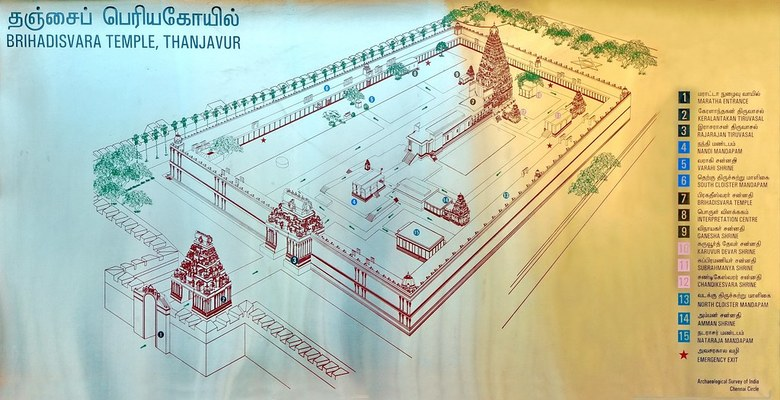

55555
5555
Brihadishvara Temple, also called Rajarajesvaram or Peruvudaiyār Kōvil, is a Hindu temple dedicated to Shiva located in South bank of Kaveri river in Thanjavur, Tamil Nadu, India.It is one of the largest South Indian temples and an exemplary example of a fully realized Dravidian architecture. It is called as Dhakshina Meru (Meru of south). Built by Tamil king Raja Raja Chola I between 1003 and 1010 AD, the temple is a part of the UNESCO World Heritage Site known as the "Great Living Chola Temples", along with the Chola dynasty era Gangaikonda Cholapuram temple and Airavatesvara temple that are about 70 kilometres (43 mi) and 40 kilometres (25 mi) to its northeast respectively.
The original monuments of this 11th century temple were built around a moat. It included gopura, the main temple, its massive tower, inscriptions, frescoes and sculptures predominantly related to Shaivism, but also of Vaishnavism and Shaktism traditions of Hinduism. The temple was damaged in its history and some artwork is now missing. Additional mandapam and monuments were added in centuries that followed. The temple now stands amidst fortified walls that were added after the 16th century.
Built out of granite, the vimana tower above the sanctum is one of the tallest in South India.It was, in all likelihood, one of the tallest structures in the world at the time of its construction.[citation needed] The temple has a massive colonnaded prakara (corridor) and one of the largest Shiva lingas in India. It is also famed for the quality of its sculpture, as well as being the location that commissioned the brass Nataraja – Shiva as the lord of dance, in 11th century. The complex includes shrines for Nandi, Parvati, Kartikeya, Ganesha, Sabhapati, Dakshinamurti, Chandeshvara, Varahi and others. The temple is one of the most visited tourist attractions in Tamil Nadu.
Where Is Brihadeswara?
The Brihadeswara Temple is located in the city of Thanjavur, about 350 kilometres (220 mi) southwest of Chennai. The city is connected daily to other major cities by the network of Indian Railways, Tamil Nadu bus services and the National Highways 67, 45C, 226 and 226 Extn.[17][18] The nearest airport with regular services is Tiruchirappalli International Airport (IATA: TRZ), about 55 kilometres (34 mi) away.
The city and the temple though inland, are at the start of the Cauveri River delta, thus with access to the Bay of Bengal and through it to the Indian Ocean. Along with the temples, the Tamil people completed the first major irrigation network in the 11th century for agriculture, for movement of goods and to control the water flow through the urban center.
Brihadeswara Design?
The Brihadeshvara temple plan and development utilizes the axial and symmetrical geometry rules. It is classified as Perunkoil (also called Madakkoil), a big temple built on a higher platform of a natural or man-made mounds. The temple complex is a rectangle that is almost two stacked squares, covering 240.79 metres (790.0 ft) east to west, and 121.92 metres (400.0 ft) north to south. In this space are five main sections: the sanctum with the towering superstructure (sri vimana), the Nandi hall in front (Nandi-mandapam) and in between these the main community hall (mukhamandapam), the great gathering hall (mahamandapam) and the pavilion that connects the great hall with the sanctum (ardhamandapam).
The temple complex integrates a large pillared and covered veranda (prakara) in its spacious courtyard, with a perimeter of about 450 metres (1,480 ft) for circumambulation. Outside this pillared veranda there are two walls of enclosure, the outer one being defensive and added in 1777 CE by the French colonial forces with gun-holes with the temple serving as an arsenal. They made the outer wall high, isolating the temple complex area. On its east end is the original main gopuram or gateway that is barrel vaulted. It is less than half the size of the main temple's vimana. Additional structures were added to the original temple after the 11th century, such as a mandapa in its northeast corner and additional gopurams (gateways) on its perimeters to allow people to enter and leave from multiple locations. Some of the shrines and structures were added during the Pandya, Nayaka, Vijayanagara and Maratha era, before the colonial era started, and these builders respected the original plans and symmetry rules. Inside the original temple courtyard, along with the main sanctum and Nandi-mandapam are two major shrines, one for Kartikeya and for Parvati. The complex has additional smaller shrines.
The Brihadisvara temple continued the Hindu temple traditions of South India by adopting architectural and decorative elements, but its scale significantly exceeded the temples constructed before the 11th century. The Chola era architects and artisans innovated the expertise to scale up and build, particularly with heavy stone and to accomplish the 63.4 metres (208 ft) high towering vimana. Nandi mandapam and the entrance gopurams, northeast view from courtyard. Another view of the entrance.
The temple faces east, and once had a water moat around it. This has been filled up. The fortified wall now runs around this moat. The two walls have ornate gateways called the gopurams. These are made from stone and display entablature. The main gateways are on the east side. The first one is called the Keralantakan tiruvasal, which means the "sacred gate of the Keralantakan". The word Keralantakan was the surname of king Rajaraja who built it. About a 100 metres (330 ft) ahead is the inner courtyard gopuram called the Rajarajan tiruvasal. This is more decorated than the Keralantakan tiruvasal, such as with its adhishthanam relief work narrating scenes from the Puranas and other Hindu texts. The inner eastern gopuram leads to a vast courtyard, in which the shrines are all signed to east-west and north-west cardinal directions. The complex can be entered either on one axis through a five-story gopuram or with a second access directly to the huge main quadrangle through a smaller free-standing gopuram. The gopuram of the main entrance is 30 m high, smaller than the vimana.
The main temple-related monuments and the great tower is in the middle of this courtyard. Around the main temple that is dedicated to Shiva, are smaller shrines, most of which are aligned axially. These are dedicated to his consort Parvati, his sons Subrahmanya and Ganesha, Nandi, Varahi, Karuvur deva (the guru of Rajaraja Chola), Chandeshvara and Nataraja. The Nandi mandapam has a monolithic seated bull facing the sanctum. In between them are stairs leading to a columned porch and community gathering hall, then an inner mandapa connecting to the pradakshina patha, or circumambulation path. The Nandi (bull) facing the mukh-mandapam weighs about 25 tonnes. It is made of a single stone and is about 2 m in height, 6 m in length and 2.5 m in width. The image of Nandi is a monolithic one and is one of the largest in the country.
Brihadeshvara Today ?
The temple is currently administered and managed by Babaji Bhonsle, the head of the Thanjavur Maratha royal family. He serves as the hereditary trustee of the palace Devasthanam which continues to manage 88 Chola temples including the Brihadeeswara temple. Tamil groups have been unsuccessfully petitioning the Tamil Nadu government to revoke these rights as he is not of Chola or Tamil lineage. According to one of the protesters, who also happens to be the coordinator of the Big Temple Rights Retrieval Committee, Babaji Bhonsle is also not the legal heir of the Maratha kings of Thanjavur.[67]
Sources
wikipedia
Author:--- wikipedia Editors
URL :--- https://en.wikipedia.org/wiki/Brihadisvara_Temple,_Thanjavur